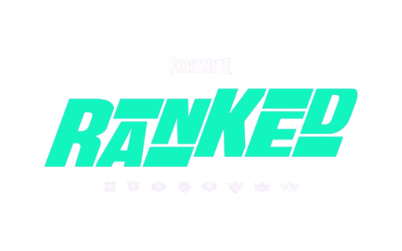

Vuelve a la página principal aquí.
El modo Rankeds es el modo competitivo de Fortnite donde todo el mundo puede competir por tener el mejor rango. En el modo de Rankeds, se te asigna un rango dependiendo de tu rendimiento en la primera partida de la temporada en ese modo y como acabaste en la anterior. Hay 8 rangos en el juego, aquí te los mostramos de más bajo a más alto:
Los 5 primeros rangos tienen subdivisiones, estas se clasifican como I, II o III, es decir que dentro del rango "oro", están Oro I, Oro II y Oro III.
En el rango Unreal nos encontramos una situación distinta, los jugadores, reciben su posición dentro del rango, es decir, se les dice en que puesto están dentro del modo Rankeds en su región. Si quieres encontrarte buscar jugadores que estén en Unreal, visita esta página para ver la tabla oficial.